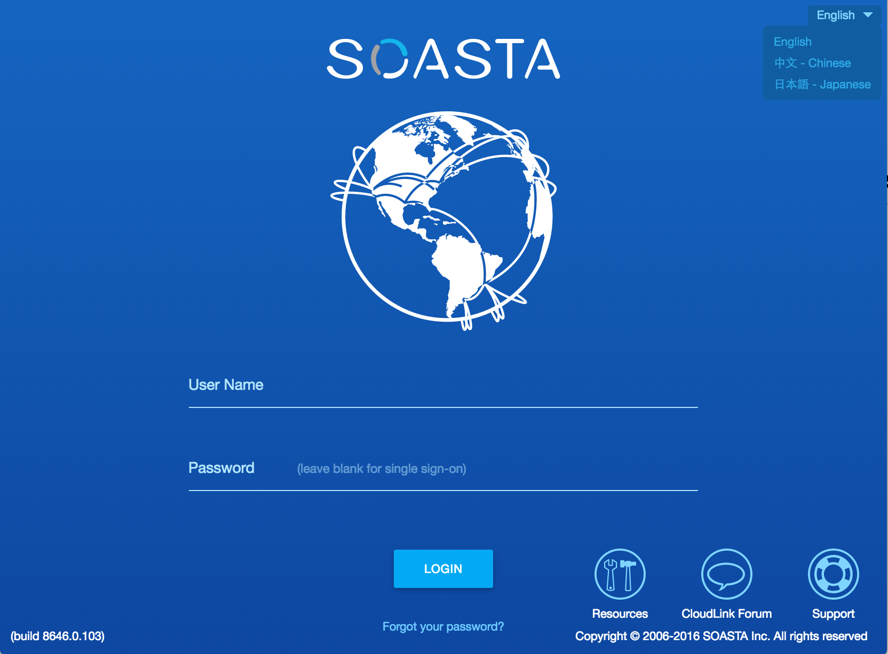
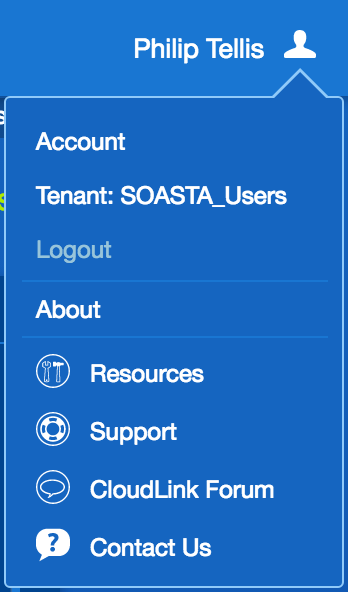
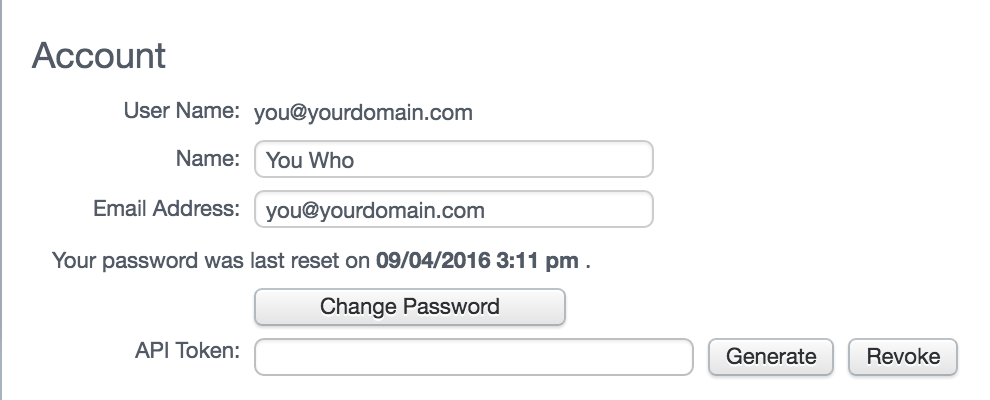
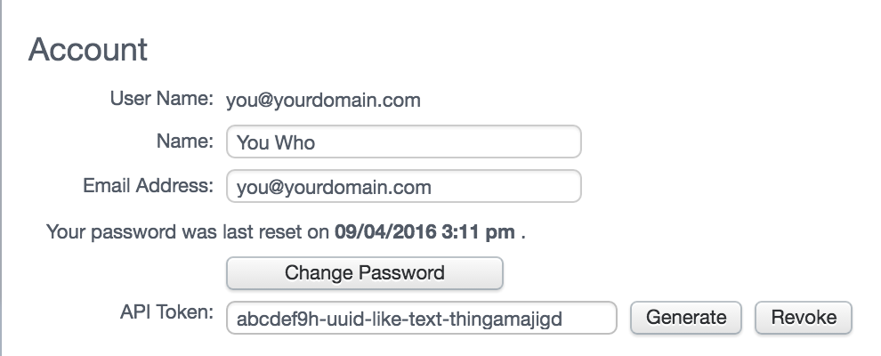

How to generate an mPulse API Token
An mPulse API Token is a token unique to your mPulse account that allows you to authenticate with the mPulse Query and Repository APIs without sending your username and password over the network.
A token may be revoked or regenerated at any time, but you may only have one token at any given time.
The token is used to authenticate as you, so any script using your token has all of your privileges.
Step 1. Sign in to mPulse
Sign in to mPulse by visiting https://mpulse.soasta.com/ and entering your username and password:

Step 2. Visit your Account Settings
After signing in, click on your name in the top right corner to show the User Menu, and select Account from there:

Step 3. Generate a new API Token
In your account settings page, the first section contains your personal information, and has options to Change your password and Generate/Revoke your API Token.
If you don't already have an API Token generated, click the Generate link:

Step 4. Copy the API Token
You should now have an API Token in the text field labelled API Token. Copy this out and use it for the mPulseAPI.getRepositoryToken call.
